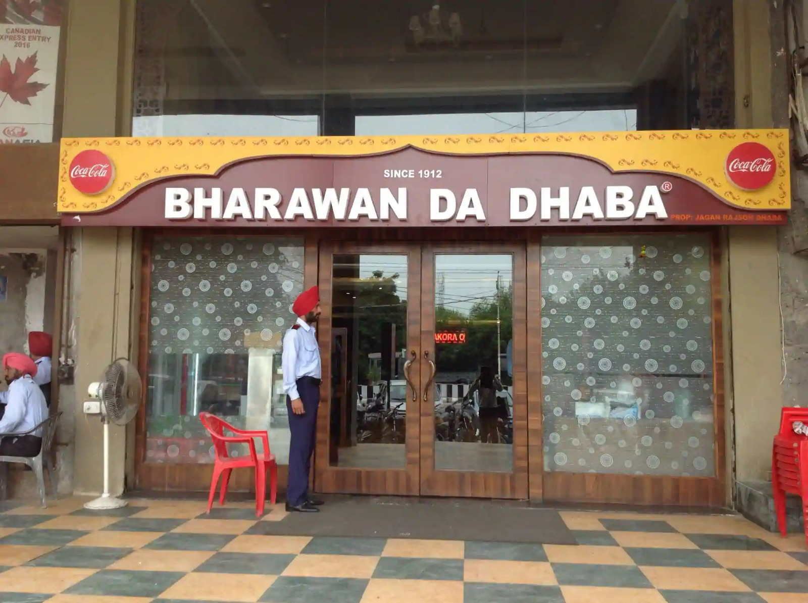
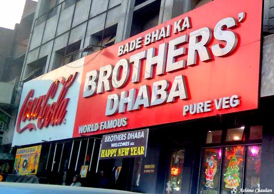
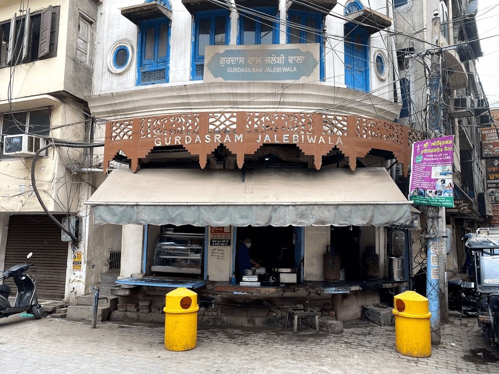
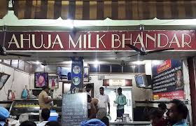
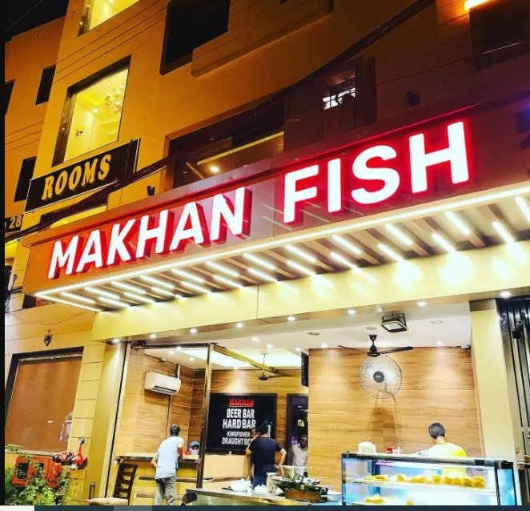

Founded in 1916, the dhaba was originally located near Lahore. The dhaba is just five minutes away from Golden Temple. Best known for the its delectable vegetarian fare, it has been visited by many famous personalities and political leaders. Their Signature dish, KESAR PHIRNI, is a must-try here. Offering delicious thali preparations that include delicious paranthas, dal fry make for an amazing treat. Other dishes you must try are malai kofta and palak paneer.
Monday 12:00 PM - 11:00 PM
Tuesday 12:00 PM - 11:00 PM
Wednesday 12:00 PM - 11:00 PM
Thursday 12:00 PM - 11:00 PM
Friday 12:00 PM - 11:00 PM
Saturday 12:00 PM - 11:00 PM
Sunday 12:00 PM - 11:00 PM

BHARWAN DA DHABA
Pleasing customers since 1912, Bharwan Da Dhaba is specialises in North Indian cuisine and the delectable traditional platters that it serves are simply to die for. The dhaba is just 10-minute walk from the famous Golden Temple Sample their delectable vegetarian thalis that include dal, chole and paneer served with butter smeared naan and roti. And DON'T MISS OUT ON PHIRNI SERVED IN KULHAD. Cash is the mode of payment accepted. The dhaba also serves Chinese cuisine.
Monday 7:00 AM - 11:59 PM
Tuesday 7:00 AM - 11:59 PM
Wednesday 7:00 AM - 11:59 PM
Thursday 7:00 AM - 11:59 PM
Friday 7:00 AM - 11:59 PM
Saturday 7:00 AM - 11:59 PM
Sunday 7:00 AM - 11:59 PM

BADE BHAI KA BROTHERS DHABA
Located near the town hall, this dhaba is known to serve the TASTIEST PARANTHAS IN AMRITSAR along with mouth-watering traditional Punjabi and South Indian meals. Gorge on piping hot paranthas. Steeped in ghee and stuffed with potatoes, herbs and pomegranate seeds, they will have you coming back for more. Equally delicious are their sarson da saag and stuffed Amritsari kulchas. Cash is the payment mode that is accepted here. The dhaba also has two other branches in Putlighar and Court Road in Amritsar.
Monday 9:00 AM - 11:00 PM
Tuesday 9:00 AM - 11:00 PM
Wednesday 9:00 AM - 11:00 PM
Thursday 9:00 AM - 11:00 PM
Tuesday 9:00 AM - 11:00 PM
Wednesday 9:00 AM - 11:00 PM
Thursday 9:00 AM - 11:00 PM
Friday 9:00 AM - 11:00 PM
Saturday 9:00 AM - 11:00 PM
Sunday 9:00 AM - 11:00 PM

GURDAS RAM JALEBI WALA
KNOWN FOR BEST JALEBIS IN TOWN. Delighting customers since 1956, this classic sweet shop located near the famous Golden Temple serves lip-smacking jalebis prepared in pure desi ghee. Treat your taste buds to super crispy and piping hot jalebis at this world-famous jalebi shop and dig into freshly-prepared delicious gulab jamuns. Since cash is the only accepted mode of payment here, be sure to keep some extra cash handy.
Monday 9:00 AM - 11:00 PM
Tuesday 9:00 AM - 11:00 PM
Wednesday 9:00 AM - 11:00 PM
Thursday 9:00 AM - 11:00 PM
Friday 9:00 AM - 11:00 PM
Saturday 9:00 AM - 11:00 PM
Sunday 9:00 AM - 11:00 PM

AHUJA MILK BHANDAR AND SWEETS
Prepared using a classic recipe that hasn’t been altered since 1964, Ahuja Milk Bhandar is just the place to be if you want to savour AUTHENTIC AMRITSARI LASSI. Served in large tumbler glasses, the lassi flavours here include mango lassi, sweet lassi, kesaria lassi and badam milk. And if you still any room left after lassi, do try the phirni and rabri. The eatery also serves light snacks and sweets. Make sure to carry cash as cards are not accepted here.
Monday 8:00 AM - 10:00 PM
Tuesday 8:00 AM - 10:00 PM
Wednesday 8:00 AM - 10:00 PM
Thursday 8:00 AM - 10:00 PM
Friday 8:00 AM - 10:00 PM
Saturday 8:00 AM - 10:00 PM
Sunday 8:00 AM - 10:00 PM

MAKHAN FISH AND CHICKEN CORNER
Established in 1962, this no-frills multi-cuisine restaurant is an iconic gourmet dining place that will have you coming back for more with its FAMOUS AMRITSARI FRIED FISH,FISH TIKKAS AND TANDOORI DELICACIES. Prepared from the freshest ingredients and home-made spices, you’ll love their lip-smacking vegetarian and non-vegetarian platters, especially their Fish Sangara and Fish Sohal. The restaurant also has a bar where you can enjoy your favourite cocktails and drinks.
Monday 10:30 AM - 11:50 PM
Tuesday 10:30 AM - 11:50 PM
Wednesday 10:30 AM - 11:50 PM
Thursday 10:30 AM - 11:50 PM
Friday 10:30 AM - 11:50 PM
Saturday 10:30 AM - 11:50 PM
Sunday 10:30 AM - 11:50 PM